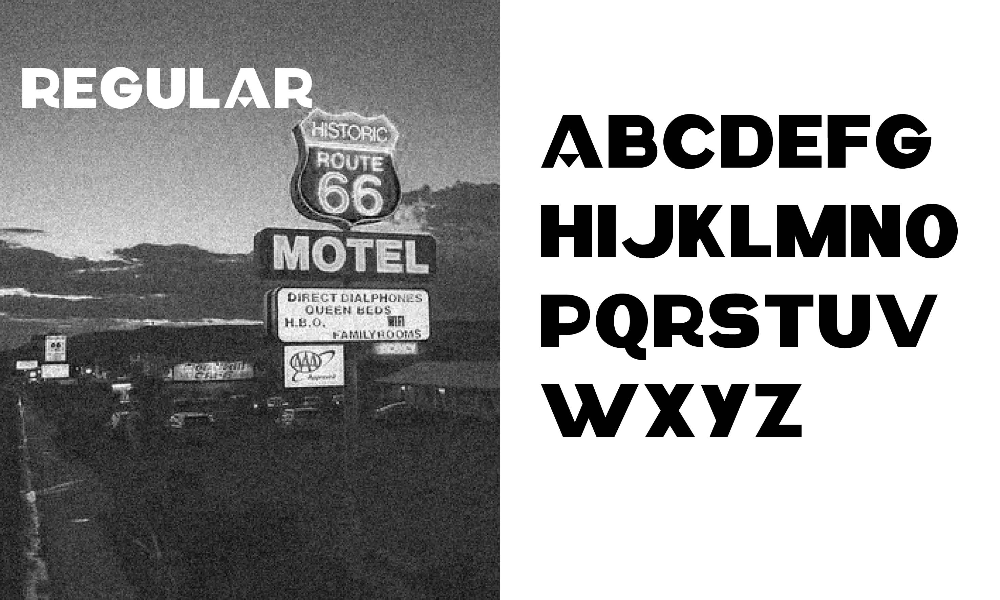
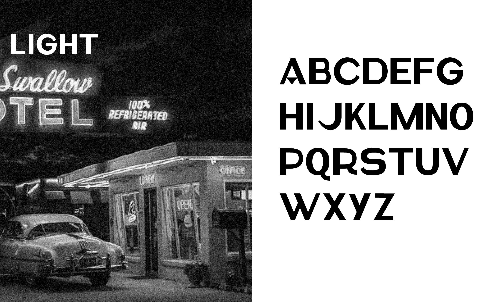
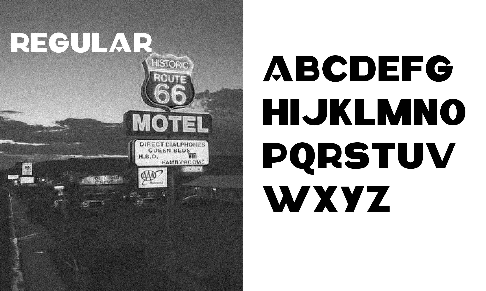
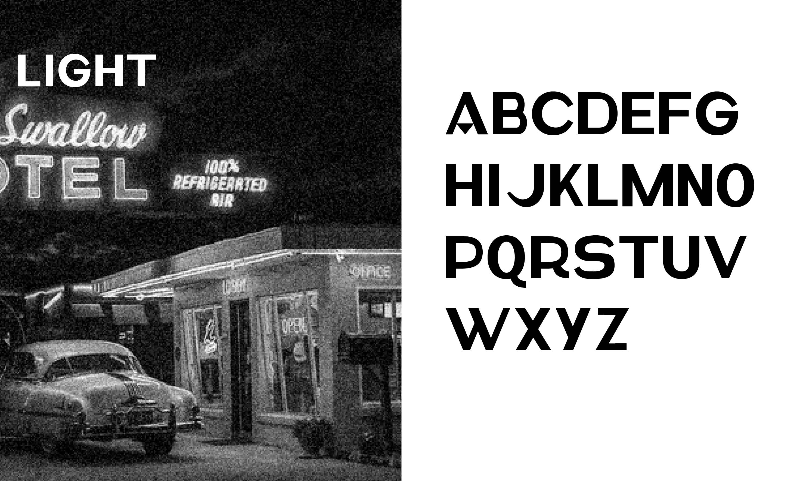

INFOS
INFOS
INFOS
INFOS
07_FARGO_FONT
Spécimen - Typographie
Réalisation d'une font
À partir du logo initial qui m'a été fourni en amont (fargo), j'ai élaboré une typographie unique en utilisant le logiciel Glyph. Cette démarche m'a servi de point de départ, guidant la conception d'une police de caractères ainsi que la création de son spécimen. Cette typographie vise à capturer l'essence de l'Amérique ancienne, notamment l'ambiance de la Route 66.
 


